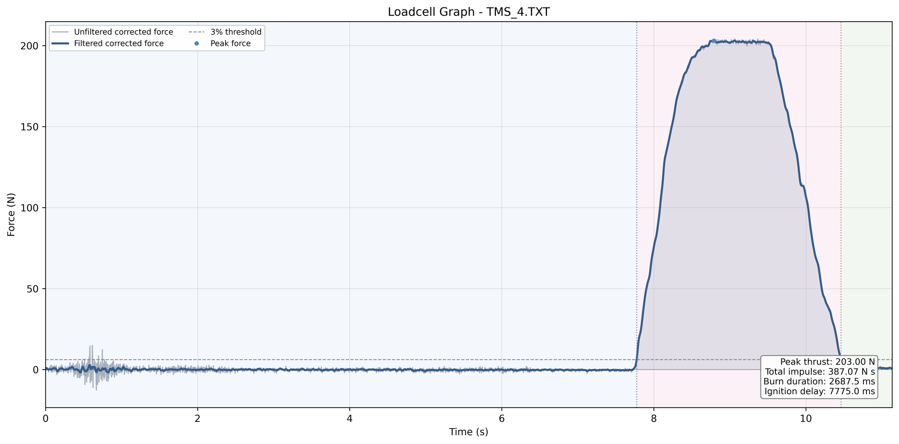

직접 만들고, 현장에서 확인합니다.
로켓팀은 NURA 활동을 위한 고체 로켓을 개발합니다. 항공기팀은 쿼드로터와 VTOL 비행체의 설계와 제작을 경진대회 경험으로 연결합니다.
프로젝트 살펴보기영상을 불러오지 못했습니다. 영상 파일을 직접 열어 보세요. 이 영상 파일 열기
PSLV 로켓 프로젝트
PSLV는 POSTECH Science Launch Vehicle의 약자입니다. 2024년 11월 첫 발사 이후, 학생들이 제작한 사운딩 로켓 안에서 구조, 비행 전자장치, 추진과 회수를 연결해 왔습니다.
2025년 12월 PSLV-II의 공개 기록에는 낙하산 임무와 360도 탑재 영상 촬영 완료가 담겨 있습니다. 한 번의 비행은 설계하고, 시험하고, 배우는 긴 과정의 한 장면입니다.
비행체와 발사 기록 살펴보기
로켓팀은 NURA 활동을 위한 고체 로켓을 개발합니다. 항공기팀은 쿼드로터와 VTOL 비행체의 설계와 제작을 경진대회 경험으로 연결합니다.
프로젝트 살펴보기
연구팀은 연간 프로젝트로 비행 상태 추정, 인젝터 혼합, 항공기 안정성 등의 질문을 탐구합니다. 연구 모임과 학회 포스터, 발표를 통해 방법과 결과를 공유합니다.
진행 중인 연구 살펴보기
신입 교육, 새내기연구참여, 회원 세미나로 활동을 시작할 수 있습니다. PSIntelligence에는 상태 추정과 로켓 최고 고도 예측을 위한 공개 노트북이 준비되어 있습니다.
배움 시작하기PSI 활동 사진
핀 조립부를 확인하고, 발사 레일을 세우고, 다음 시험을 준비합니다. 하드웨어를 둘러싼 사람들과 그 순간들을 만나보세요.
활동 사진 둘러보기 발사일 · 2025년 12월
발사일 · 2025년 12월 현장에서 준비하기 · NURA, 2025년 8월
현장에서 준비하기 · NURA, 2025년 8월진행 중인 연구 / 2026
다섯 팀이 분리 동역학, 학습 기반 착륙, 전기식 추력 편향, 하이브리드 인젝터와 테일핀 제어를 연구합니다. 현재의 방법과 앞으로의 검증 과제를 만나보세요.
진행 중인 다섯 연구 보기2025년 학회 발표에서 고른 연구입니다. 전체 아카이브에서 원제와 발표 자료를 확인할 수 있습니다.
공개 시험 아카이브 / 2026
측정값은 시험의 맥락과 함께 볼 때 의미가 있습니다. PSI 공개 기록에는 추력·압력 데이터, 그래프, 처리된 측정값과 시험 중 관찰한 문제가 담겨 있습니다.
시험 결과 포털 열기2026년 공개 시험 기록입니다. 7월 기록에는 압력 채널 이상, 4월 3일 기록에는 여러 시험 문제가 남아 있습니다. 결과와 함께 한계도 기록합니다.
PSIntelligence로 배우기
잡음이 섞인 측정값으로 로켓의 고도를 어떻게 추정할까요? PSIntelligence 101은 확률과 칼만 필터에서 시작해 EKF/UKF, 물리 기반 모델, 불확실성을 탐구합니다.
PSI의 교육 살펴보기2023년 학생들의 준비에서 출발해 2024년 2월 창립한 PSI. 연구팀과 경진대회팀, 그 활동을 뒷받침하는 구성원들이 학생 중심의 공동체를 함께 만들어 갑니다.
PSI 알아보기사람들을 만나고, 입문 노트북을 열어 보고, 최신 모집 공지를 확인하세요. 완성된 연구 아이디어가 없어도 배우는 것부터 시작할 수 있습니다.
PSI 참여 안내{kind=link}